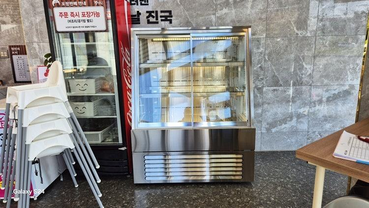
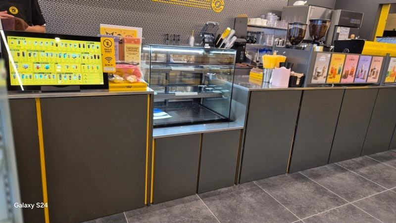
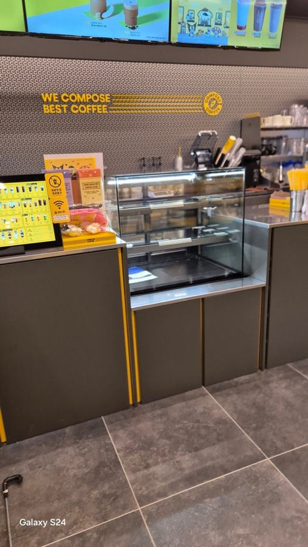
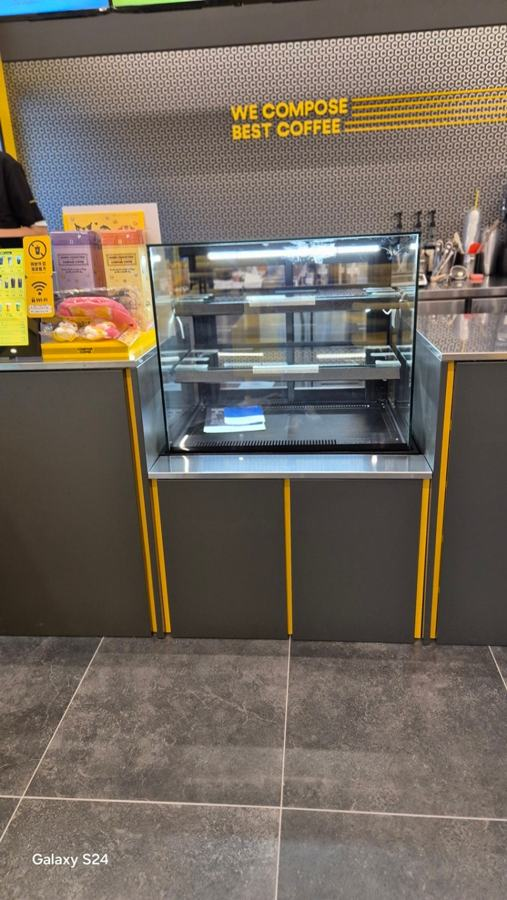
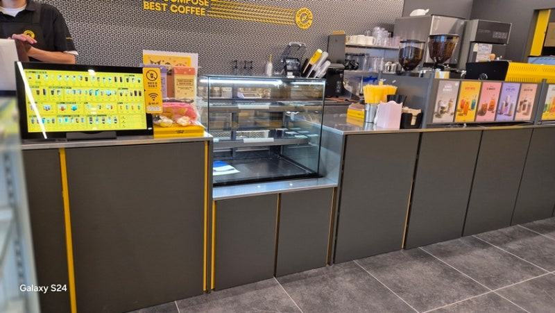

제과쇼케이스
제과쇼케이스 렌탈과 구매, 빵집 운영 방식별로 고르는 법

기간이 정해진 팝업 매장, 연말 케이크 시즌처럼 잠깐 진열량을 늘려야 할 때는 제과쇼케이스 렌탈이 부담이 덜합니다. 반대로 카운터에 맞춰 넣거나 매장 콘셉트에 맞춘 외관·조명이 필요하고 오래 운영할 계획이라면 맞춤 구매가 결과적으로 맞는 경우가 많습니다.
안녕하세요. 베이커리와 디저트 카페 진열장을 매장 카운터에 맞춰 제작하는 한성쇼케이스입니다.
빵집이나 디저트 카페를 준비하시는 사장님들이 견적을 받다가 한 번쯤 검색해 보시는 것이 제과쇼케이스 렌탈입니다.
인테리어와 오븐에 이미 큰돈이 들어가니 쇼케이스만이라도 나눠 내고 싶은 마음이 드시는 거죠.
그런데 제과쇼케이스는 카운터와 한 몸처럼 붙어 매장 첫인상을 만드는 장비라, 렌탈로 들어오는 정해진 규격이 카운터 높이나 폭과 어긋나면 그 어색함이 매일 손님 눈에 들어옵니다.
오늘은 어떤 운영 방식에 렌탈이 맞고 어떤 경우에 구매가 맞는지, 그리고 렌탈 제품을 고를 때 제과쇼케이스에서 특히 봐야 할 사양을 정리해 드리겠습니다.
1. 렌탈이 맞는 운영 방식
백화점 팝업이나 행사 부스처럼 운영 기간이 정해져 있는 경우에는 렌탈이 합리적입니다. 행사가 끝나면 장비를 둘 곳도, 다시 쓸 계획도 없다면 사는 것보다 빌리는 편이 깔끔합니다.
연말이나 기념일 시즌에 케이크 예약이 몰려 진열 칸이 잠깐 모자란 경우도 렌탈을 고려해 볼 만합니다.
평소 쓰는 쇼케이스는 그대로 두고, 시즌 기간에만 보조 장비를 들이는 방식입니다.
- 운영 기간이 정해진 팝업·행사
- 시즌에만 늘어나는 진열량
- 매장 이전 계획이 가까운 경우
2. 구매가 맞는 운영 방식
카운터에 쇼케이스를 매립하거나 카운터 상판 높이에 맞춰 이어 붙이는 디자인이라면 정해진 규격의 렌탈 제품으로는 맞추기 어렵습니다.
카운터 한 칸, 커피 머신과 계산대 사이처럼 폭이 정해진 자리도 마찬가지입니다.
매장 콘셉트에 맞춘 프레임 색, 사선형 유리처럼 진열 효과를 높이는 형태, 디저트 색감에 맞춘 조명이 필요하다면 맞춤 구매 쪽이 선택지가 넓습니다.
매장을 오래 운영할 계획이라면 렌탈 기간 총액과 구매 견적을 나란히 놓고 비교해 보세요.


3. 렌탈 제품에서 꼭 볼 사양
렌탈로 들이더라도 디저트 상태는 사장님 책임입니다. 냉기가 한쪽으로 몰리거나 바람이 케이크 표면에 직접 닿는 구조면 크림이 마르고 색이 변합니다.
직접 받아 쓸 제품의 냉기 순환 방식과 결로 방지 유리 여부를 꼭 확인하세요.
조명 색과 단 높이도 중요합니다. 조명이 차갑거나 어두우면 빵 표면의 구운 색이 살지 않고, 단 간격이 낮으면 홀케이크가 들어가지 않습니다.
진열할 제품 중 가장 키 큰 케이크 높이를 재 두고 단 간격과 비교해 보세요.
- 냉기 순환 방식과 바람 방향
- 결로 방지 유리 여부
- 조명 색과 단 간격
4. 계약 전에 확인할 조건
렌탈 계약서에서는 관리 포함 범위, 고장 시 방문 시점, 중도 해지와 반납 조건을 확인하세요. 제과쇼케이스는 크림과 시럽이 흘러 내부가 더러워지기 쉬워, 반납할 때 청소 상태나 흠집을 두고 비용이 붙는 조항이 있는지도 짚어 두는 게 좋습니다.
시즌용으로 빌린다면 설치·회수 날짜가 행사 일정과 맞는지도 중요합니다. 케이크 예약이 몰리는 날 직전에 들어오면 온도가 안정될 시간이 부족할 수 있으니 여유 있게 받으시길 권합니다.
체크리스트
- 운영 기간과 매장 이전 계획
- 카운터 매립·맞춤 필요 여부
- 냉기 순환과 결로 방지 유리
- 가장 큰 케이크 높이와 단 간격
- 관리 범위·반납 조건·설치 일정
현장에서 자주 보는 경우: 카운터 한 칸에 미니 쇼케이스를 들여야 할 때
작은 디저트 카페에서는 카운터 위나 기기 사이처럼 제한된 자리에 미니 제과쇼케이스를 두는 경우가 많습니다.
이때 매장에 맞지 않는 사이즈를 억지로 들이면 동선이 복잡해지고 인테리어 흐름이 끊겨 보이기 쉽습니다.
정해진 규격으로 들어오는 렌탈 제품에서 자주 생기는 일입니다.
원문에서는 미니 쇼케이스일수록 크기보다 냉기가 어떻게 흐르는지를 먼저 봐야 한다고 짚습니다. 내부가 좁아 냉기가 한쪽으로 몰리면 디저트 표면이 빨리 마르기 때문입니다.
여기에 기기 높이·폭·주변 조명과의 조화까지 맞추려면 매장 자리에 맞춘 제작이 유리합니다.




자주 묻는 질문
렌탈로 쓰다가 같은 제품을 구매할 수도 있나요?
계약 조건에 따라 다릅니다. 만기 후 인수 조건이 있는지, 그때 금액은 어떻게 정해지는지 계약 전에 확인해 두세요.
시즌에만 쓸 보조 쇼케이스는 어떤 형태가 좋나요?
카운터 뒤나 옆에 임시로 둘 수 있는 크기에, 홀케이크가 들어가는 단 간격인지가 중요합니다. 설치할 자리 전원과 통풍 공간도 미리 확인하세요.
맞춤 구매는 제작 기간이 얼마나 걸리나요?
디자인과 사양, 발주 상황에 따라 다릅니다. 오픈 일정이 정해져 있다면 인테리어 도면이 나오는 시점에 상담을 시작하시는 편이 여유롭습니다.
매장 조건에 맞춰 만드는 한성쇼케이스
원하시는 제품 사진과 설치할 공간 사진만 보내 주셔도 매장에 맞는 구성을 추천해 드립니다.
- 전국 240여 개 A/S 전담 센터 운영
- 본사 대량 자재 매입으로 품질 대비 합리적인 가격
- 유럽제·삼성 냉각 콤프레셔 적용
- 국내 최초 쇼케이스 전문 디자이너 상주
매장 폭과 원하는 진열 구성을 알려 주세요. 실측과 견적을 안내해 드립니다.
031-986-2458